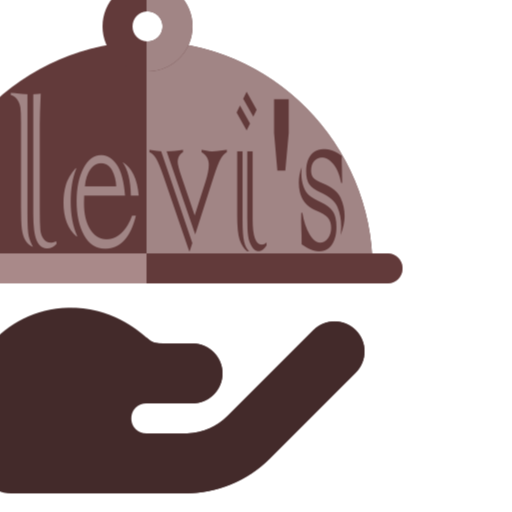
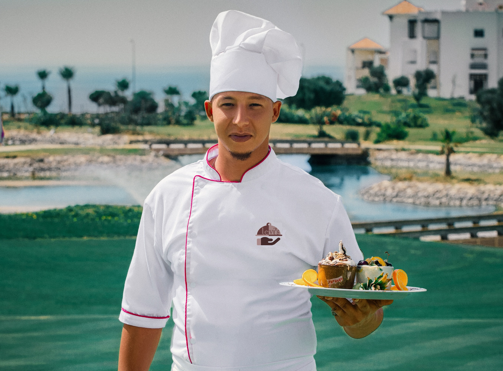

<!DOCTYPE html>
<html lang="pt-br">

<head>
  <meta charset="UTF-8">
  <meta name="viewport" content="width=device-width, initial-scale=1.0">
  <title>Levi's</title>
  <link rel="apple-touch-icon" sizes="57x57" href="/apple-icon-57x57.png">
  <link rel="apple-touch-icon" sizes="60x60" href="/apple-icon-60x60.png">
  <link rel="apple-touch-icon" sizes="72x72" href="/apple-icon-72x72.png">
  <link rel="apple-touch-icon" sizes="76x76" href="/apple-icon-76x76.png">
  <link rel="apple-touch-icon" sizes="114x114" href="/apple-icon-114x114.png">
  <link rel="apple-touch-icon" sizes="120x120" href="/apple-icon-120x120.png">
  <link rel="apple-touch-icon" sizes="144x144" href="/apple-icon-144x144.png">
  <link rel="apple-touch-icon" sizes="152x152" href="/apple-icon-152x152.png">
  <link rel="apple-touch-icon" sizes="180x180" href="/apple-icon-180x180.png">
  <link rel="icon" type="image/png" sizes="192x192" href="/android-icon-192x192.png">
  <link rel="icon" type="image/png" sizes="32x32" href="/favicon-32x32.png">
  <link rel="icon" type="image/png" sizes="96x96" href="/favicon-96x96.png">
  <link rel="icon" type="image/png" sizes="16x16" href="/favicon-16x16.png">
  <link rel="manifest" href="/manifest.json">
  <meta name="msapplication-TileColor" content="#ffffff">
  <meta name="msapplication-TileImage" content="/ms-icon-144x144.png">
  <meta name="theme-color" content="#ffffff">
  <link rel="stylesheet" href="assets/css/main.css" type="text/css">
</head>
<html>

<body>

  <header>

    <div class="menu">
      <div class="logo">
        <a href="index.html"></a>
      </div>
      <button class="btn-open">
        <svg id="menu-black-18dp" xmlns="http://www.w3.org/2000/svg" width="32" height="32" viewBox="0 0 32 32">
          <path id="Caminho_215" data-name="Caminho 215" d="M0,0H32V32H0Z" fill="none" />
          <path id="Caminho_216" data-name="Caminho 216" d="M3,18H29V16H3Zm0-5H29V11H3ZM3,6V8H29V6Z"
            transform="translate(0 4)" />
        </svg>
      </button>

      <button class="btn-close">
        <svg xmlns="http://www.w3.org/2000/svg" width="24" height="24" viewBox="0 0 24 24">
          <path d="M0,0H24V24H0Z" fill="none" />
          <path
            d="M19,6.41,17.59,5,12,10.59,6.41,5,5,6.41,10.59,12,5,17.59,6.41,19,12,13.41,17.59,19,19,17.59,13.41,12Z" />
        </svg>
      </button>

      <nav>

        <ul>

          <li><a href="index.html">Home</a></li>
          <li><a href="about.html">Sobre</a></li>
          <li><a href="menu.html">Cardapio</a></li>
          <li><a href="contact.html">Contato</a></li>
        </ul>
      </nav>

  </header>
  <main id="about">
    <div class="nick">
      
      <h1>Levis</h1>
  </div>
<div class="mohamed">
  
      <p>
        Com os pés fincados em suas raízes e os olhos voltados para o futuro, 
        Julio Ramos é acima de tudo um apaixonado. Pelo Brasil, pela natureza, 
        pela gastronomia, pela vida. 
        Movido por desafios e um grande sentimento de indignação, 
        Ramos consegue com extrema delicadeza e técnica transformar essa energia criativa 
        em experiências inesquecíveis para quem tem a oportunidade de provar suas invenções. Seu foco é explorar todas as possibilidades gastronômicas dos ingredientes nacionais, aliando as bases clássicas às técnicas atuais. No entanto, com arrojo e visão, Atala supera as fronteiras da cozinha e atua como cidadão responsável, valorizando o pequeno produtor,
        incentivando jovens profissionais e apoiando projetos de terceiro setor.
      </p>
      <div class="copa">
      
      <p>
        Demorou muito para o nosso restaurante ser reconhecido,
        Foram necessários alguns anos para a mídia especializada perceber que ali acontecia algo sério. Após uma temporada de sucesso à frente do restaurante Namesa, 
         no final de 1999 o chef Julio Ramos iria marcar e, ao mesmo tempo, 
         revolucionar a história da gastronomia vegetariana no país com um projeto audacioso: 
         a criação de um restaurante contemporâneo de cozinha autoral que resgatasse sabores da cozinha brasileira 
         e desvendasse ingredientes ainda pouco explorados como açaí, pupunha e cupuaçu. 
         Saiu então de cena o aspecto curioso e entrou no palco a percepção do real: um chef maduro, pesquisador e defensor da cozinha vegetariana dedicando-se à sua produção mais nobre, 
         contemporânea e etérea. O resultado: o Levis Restaurante. Um restaurante premiado e aclamado pela crítica, 
         mas que continua instigando os apaixonados por alta gastronomia com suas revelações sobre a cozinha vegetariana e os ingredientes do Brasil.
      </p>
    </div>
</div>
 
</main>

<footer id="footer">

  <div class="footer-title">

    <div class="field">


      <button><a href="menu.html">Conheça os nossos principais pratos</a></button>
    </div>
  </div>
  <h1>Horário de Atendimento</h1>
  <p> TERÇA Á QUINTA 12:00 - 20:00 </p>
  <p> SEXTA Á DOMING0 16:00 - 00:00</p>
  <h3>© Smile 2020 Allright reserved.</h3>
  <div class="term">
    <a href="#">TERMOS DE USO</a>
    <p> </p><a href="#">POLÍTICA DE PRIVACIDADADE</a>
  </div>


  </div>

  </footer>
  

</body>

</html>